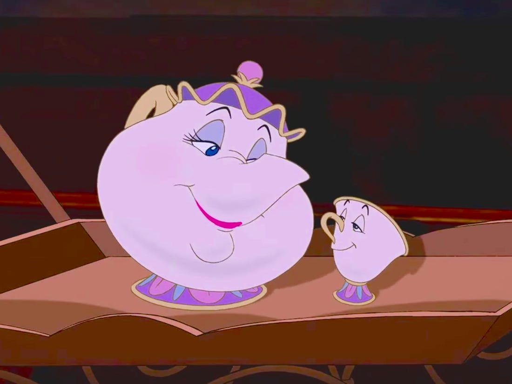

Personalidad
Amable, maternal, cálida.
Firme y estructurada.
Al
desarrollar tareas de la casa
es ordenada y servicial.
Aspecto
En su versión como objeto es
una tetera de pocelana
clásica, de estilo inglés. Cuando se vuelve
humana
tiene aspecto de madre y
utiliza
un uniforme de ama
de llaves.
Contexto
Película: La Bella y la Bestia.
Año: 1991.
Intérprete: Angela Lansbury.
Doblaje: Norma Herrera - LA
